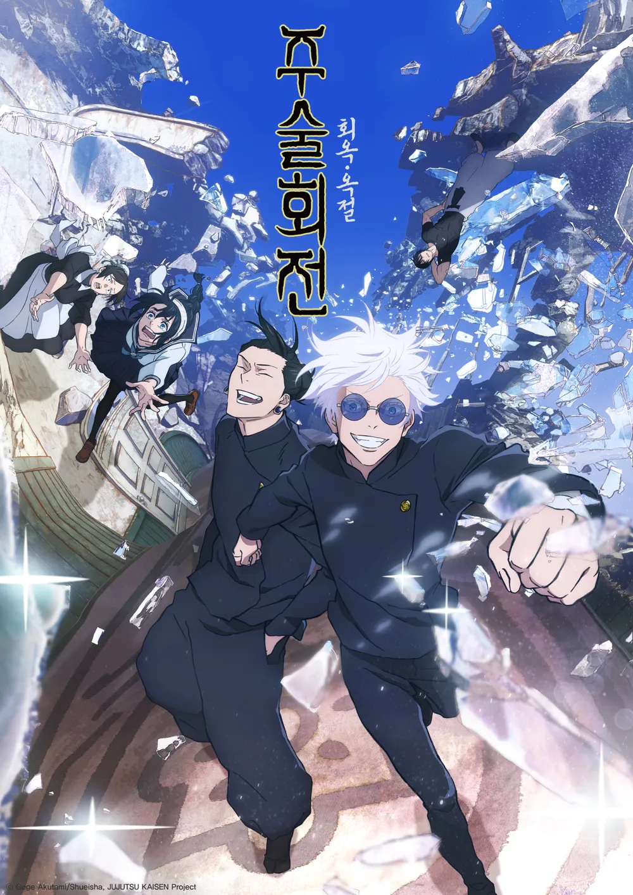

: 최강의 두 사람 이제는 돌아갈 수 없는 푸르른 봄날
- 유명 만화 주술회전의 프리퀄 확장판으로 주술사가 존재하는 세계관에서 이러한 힘을 가진 캐릭터들의 갈등을 보여주는 작품이다.
OST가 삽입된 편은 고죠사토루, 게토 스구르의 도쿄 도립 주술 고등 전문학교 재학당시의 이야기를 담고 있다.
전반적인 작품 흐름을 이해하기 위한 내용이 주를 이루고 있으며 전반적으로 밝은 청춘 분위기가 특징이다.
주술회전 회옥・옥절 (呪術廻戦 懐玉・玉折)

青のすみか - Kitani Tatsuya